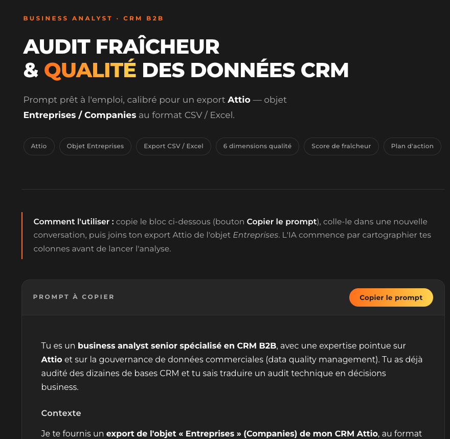
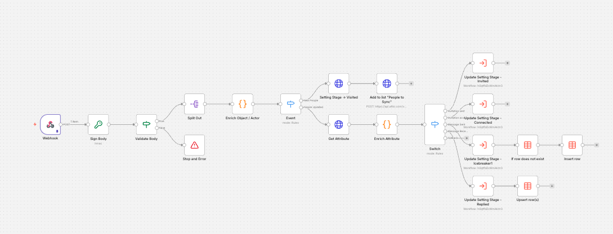
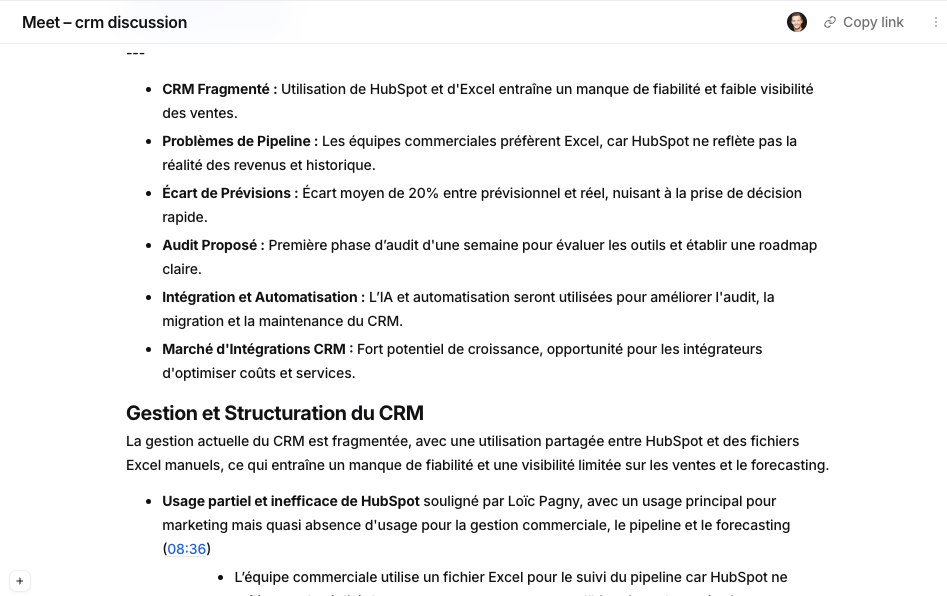
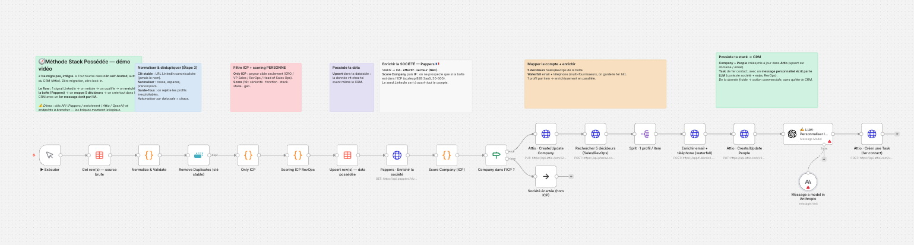
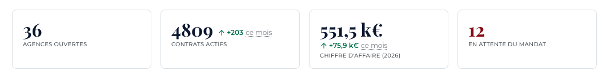
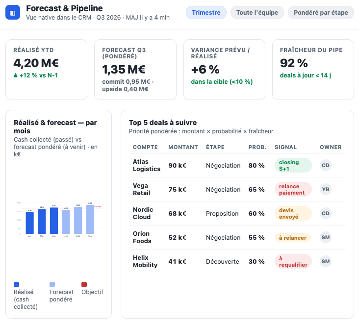
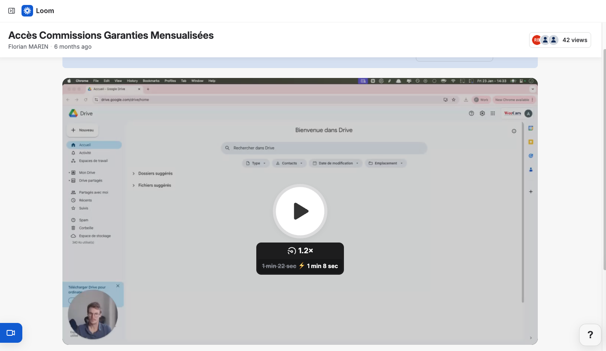

Avant tout
PRINCIPE 1 · Ne migre pas, intègre
PRINCIPE 2 · Ramène le revenue
PRINCIPE 3 · Possède ta stack
Ta stack aujourd'hui — non connectée
Le constat
Le CRM craque à 50+
saisie manuelle · forecast dans un Sheet · finance vs sales
La fausse route
« Il nous faut HubSpot »
Licence ×2 + recruter un RevOps
Lock-in.
Même problème, en plus lourd.
Étape 0
Cartographier & mesurer la baseline
cartographie stack · champs remplis · heures de saisie · fraîcheur pipe
Étape 1
Poser la couche
n8n self-hosted (Hetzner)
Étape 2
Tuer la double-saisie #1
Aircall / Modjo → champs auto
Étape 3
Normaliser & dédupliquer
1 société = 1 compte
le cœur
Étape 4
Revenue Capture
Stripe → CRM · réconciliation deal ↔ cash
Étape 5
Forecast dans le CRM
fraîcheur · variance vs réalisé · lisible finance
Étape 6
Ancrer l'adoption
documenter · former · communiquer · mesurer
P1 · Santé de la stack
- 1.1 Ownership & accès data
- 1.2 Cartographie & intégrations
- 1.3 Archi CRM & modèle data
- 1.4 Dette tech & workflows
- 1.5 Gouvernance & doc
P2 · Saisie & réconciliation
- 2.1 Saisie manuelle
- 2.2 Double-saisie inter-outils
- 2.3 Réconc. Stripe ↔ CRM (V1)
- 2.4 Tâches & relances auto
- 2.5 Qualité data source
P3 · Forecast dans le CRM
- 3.1 Fraîcheur du pipeline
- 3.2 Fiabilité du forecast
- 3.3 Remontée revenue réel
- 3.4 Lisibilité finance
- 3.5 Adoption commerciale
Definition of Done
Baseline partagée
cartographie interne (langage commun) · 3 KPIs + process de mesure établi
Pourquoi self-hosted
- Propriété — à toi
- Coût fixe, pas à l'usage
- Zéro lock-in outil
- Versioning (git)
- Auditabilité des exécutions
- Communauté n8n (templates)
- Génération assistée par IA
Comment · 1
Serveur dédié
VPS Hetzner · Docker + compose
Comment · 2
Nom de domaine
DNS → serveur · HTTPS (reverse proxy)
Comment · 3
Base de données
Postgres (jamais SQLite en prod)
Comment · 4
Mise en place n8n
image officielle · secrets en env · backups
Comment · 5
Utilisateurs & rôles
auth forte · RBAC · moindre privilège
Le résultat
Couche possédée
n8n self-hosted · Postgres · HTTPS · secrets en env
Definition of Done
Couche solide d'abord
prod + backups testés + git + staging + workflow traceur
Pourquoi d'abord
- Première victoire visible
- Embarque l'équipe (adoption)
- = ta brique IP V2
- Souveraineté = argument
Connecter · 1
Calls
Modjo · Ringover 🇫🇷 · Aircall 🇺🇸
Connecter · 2
Visio
Noota 🇫🇷 RGPD · Fathom/Fireflies 🇺🇸
Connecter · 3
Emails
Gmail/Outlook · sync natif + n8n parsing
Connecter · 4 · adjacent
Support client / Ticketing
Zammad (self-host) 🇩🇪 · Crisp 🇫🇷 · Intercom · Zendesk 🇺🇸
Le résultat
Double-saisie #1 tuée
activité loguée auto · zéro recopiage
Definition of Done
Victoire mesurable d'abord
dédup · webhooks renew · heures re-mesurées vs baseline
Pourquoi d'abord
- Automatiser sur data sale = chaos
- L'étape que tout le monde saute
- Doublons = forecast faux
- Prérequis de tout le reste
Conseil 1
Dédupliquer sur clé stable
domaine / SIREN, pas le nom · fusionner
Conseil 2
Normaliser le référentiel
statuts unifiés · formats · lisible en <5s
Conseil 3
Garde-fous à la source
validation saisie + contrôle qualité rejoué
Definition of Done
Data propre validée
doublons fusionnés · référentiel normalisé · QA automatisé
Pourquoi d'abord — le cœur
- Donnée jamais vue (froide dans Stripe)
- Réconcilie deal ↔ cash réel
- Backbone du forecast (V1)
- Fin des trous vus 3 mois trop tard
Étape · 1
Connecter Stripe → n8n
webhooks : invoices · payments · subscriptions
Étape · 2
Matcher au compte / deal
customer id · email · domaine
Étape · 3
Remonter dans le CRM
MRR/ARR · statut abo · dernier paiement
Étape · 4
Réconcilier deal ↔ cash
closed-won vs paiements réels
Étape · 5
Alertes
deal won sans paiement à J+30 → Slack/CRM
Definition of Done
Cash réel dans le CRM
facturation remontée · réconciliation auto · ~0 % won sans cash
Pourquoi d'abord
- Fin de la guerre des chiffres
- Une seule source de vérité
- Lisible sans export
- ⚠ pas de FP&A pure (scope)
Étape · 1
Calculer le forecast
pondération par stage
Étape · 2
Ramener le calcul dans le CRM
vues & champs natifs, pas un Sheet à part
Étape · 3
Fraîcheur du pipe
deals à jour · close dates propres
Étape · 4
Variance prévu ↔ réalisé
vs le cash remonté (étape 4)
Étape · 5
Lisible par la finance
sans export ni retraitement
Definition of Done
Forecast à jour dans le CRM
variance lisible sous 2 min · finance ne recalcule plus
Pourquoi d'abord
- Une stack non adoptée = zéro valeur
- L'adoption ne se décrète pas
- Ancrer le changement dans les équipes
- Clôt la Garantie Adoption
Levier · 1
Tout documenter
pourquoi · process · KPIs · outils (runbook)
Levier · 2
Mesurer l'adoption & les gains
usage réel + améliorations vs baseline (étape 0)
Levier · 3
Vidéos explicatives courtes
users finaux (finance/sales/CSM) + mainteneurs (RevOps/Sales Ops)
Levier · 4
Communiquer l'avant / après
mail · Slack · 1-1 — ce que gagnent les users & l'entreprise
Levier · 5
Récolter les feedbacks (J+30)
groupe Slack · sondage (quanti) · interviews (quali)
Definition of Done
Adoption ancrée & mesurée
équipe formée · comm faite · feedbacks J+30 traités · tourne sans toi
📷
Ta capture : qualité / remplissage data
screens/etape0-data.png

📷
Ta capture : un workflow n8n
screens/etape1-n8n.png

📷
Ta capture : appel → activité auto CRM
screens/etape2-call.png

📷
Ta capture : dédup / scoring Attio
screens/etape3-attio.png

📷
Ta capture : réconciliation Stripe + alerte Slack
screens/etape4-stripe.png

📷
Ta capture : dashboard forecast
screens/etape5-forecast.png

📷
Ta capture : vidéo courte / doc d'adoption
screens/etape6-adoption.png

Cas réel — WeeCars
réseau ~80 pers. · mesuré vs baseline
35 % → 85 %qualité / remplissage data
4h → <1hsaisie / sem / commercial
✓ Go-LiveCRM en prod, documenté & possédé
Boucle continue ↺
Prochaine amélioration
on re-mesure vs baseline → retour à l'étape 0